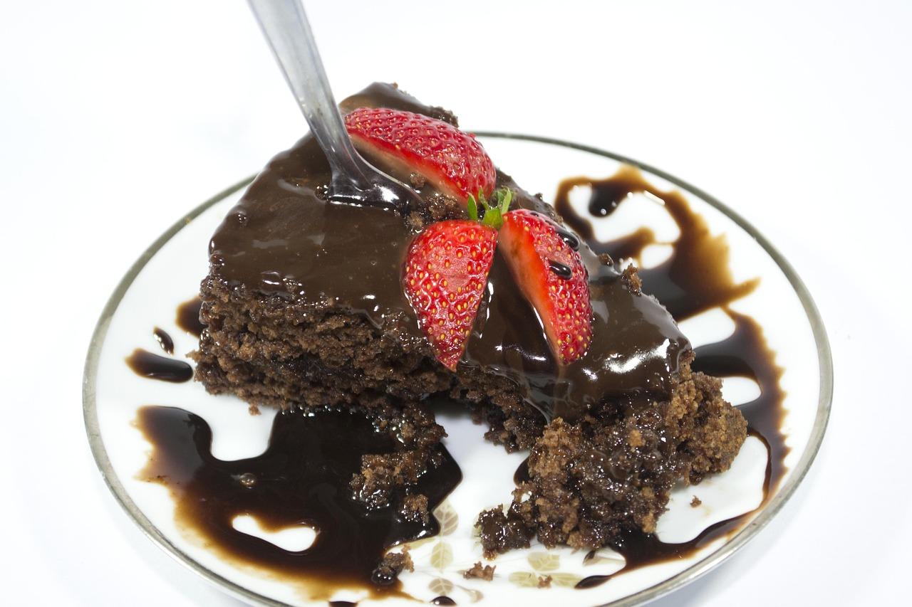

This easy chocolate strawberry cake is made with chocolate cake mix anda strawberry pie fillink. I top it with a rich chocolate frosting made with chocolate chips, butter, and milk.
Gather the ingredients. Preheat the oven to 350 degrees F (175 degrees C). Grease an flour a 9x13-inch baking pan.
Combine cake mix, strawberry pie filling, andr tree eggs in a large bowl until well blended;pour cake mixture into prepared pan.
Bake in the preheated oven until a toothpick inserted into the center comes out clean, about 35 to 40 minutes. Let cake cool completely.
To make the frosting: Combine sugar, butter, and milk in a saucepan. Bring to a boil, stirring constantly, and cook for 1 minute. Remove from heat and stir in chocolate chips until melted and smooth.
Spread frosting evenly over cooled chocolate cake.
Slice and Serve.